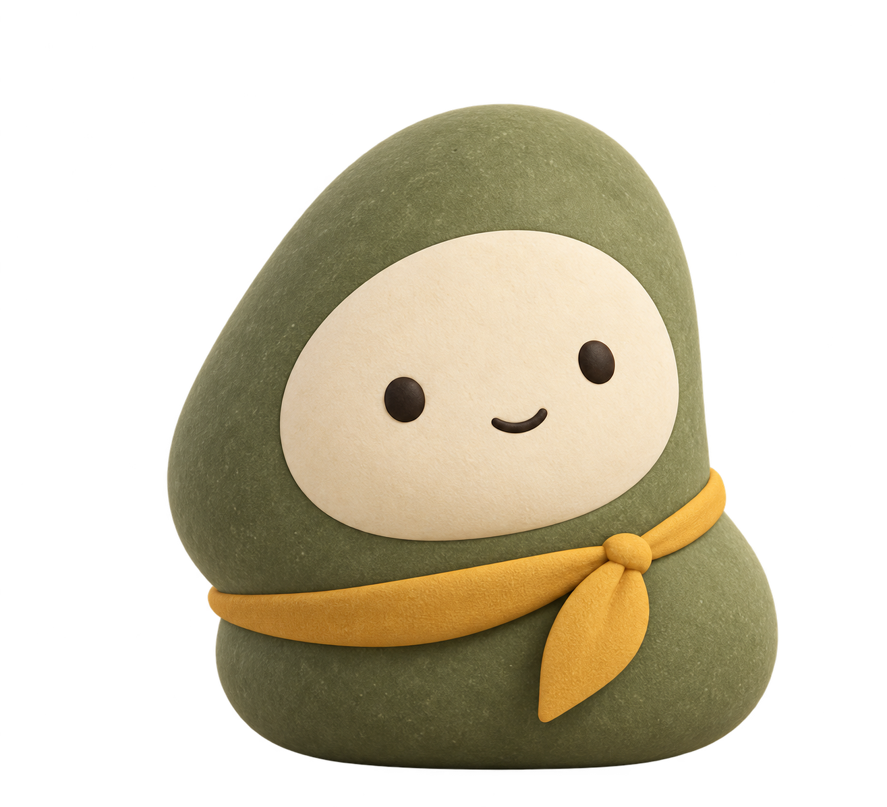
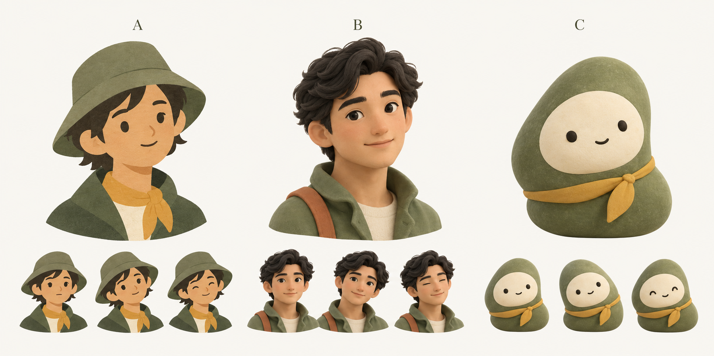

ROAMORROW · 角色与对话设计
一位小旅伴，留一点安静。
C 方向已选定。苔绿的小石头、奶油色的脸和一条赭黄围巾，作为后续品牌的起点。

C · 已选择的角色方向
有自己的样子，也不打扰你。
平时安静。收到消息，轻轻回应一下；处理完，再慢慢停下来。把注意力留给对话和旅途。
点击按钮看轻歪头和回正。此处手动模拟状态，未接入真实任务；动作会在 12 秒内结束。
排版设计预览 · 非 iOS 实机截图
今天 09:41 · 示例对话
今天有点累，什么也不想安排。
好，那今天就先不安排什么。
找个舒服的位置坐一会儿，什么都不做也可以。
想聊聊今天，还是先安静一会儿？
说说现在想做什么…
缩成头像，还是它。
24
32
48
图标草案
聊天头像只放在整组回复旁。导航位置沿用，地图和收藏继续使用清晰的功能图标。
一句话，一个意思。
通常一到三条短气泡，不机械凑成三条。城市说明只在相关时出现；地点、照片和邀约仍使用对应卡片。它们是一轮回复，共享时间、来源和引用关系。
减少动态效果时，保留静止头像和状态文字。失败时给出原因和重试，不靠表情猜状态。
查看最初的 A / B / C 探索图

角色原稿：内置 ImageGen。Magnific 尚待首次账户启用，本轮未使用 Magnific 出图。动效由本地页面演示，正式原生接入需绑定真实状态。